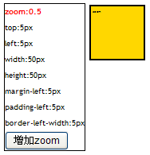
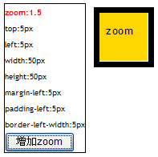
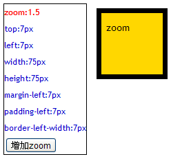
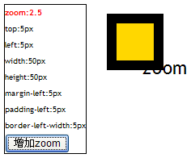

BX8017: 只有 IE Chrome Safari 支持 'zoom' 特性并且他们的具体实现方式不同
标准参考
无。
问题描述
CSS 的 'zoom' 特性最初是由 IE 浏览器制定之后被逐步标准化，现在已经出现在 CSS 3.0 规范草案中，现行的 CSS 2.1 规范中不存在。
详细资料请参考 MSDN 说明 ： -ms-zoom Attribute | zoom Property 以及 CSS 3.0 规范草案：7.1. Properties from CSS
例如，一个设置了 'position：absolute' 和 'zoom' 并且边框为可见的 DIV 元素 D，其内包含文字内容 C，当它的 'zoom' 值不断变大时各浏览器中 D 和 C 的变化情况存在差异，可按各浏览器中 D 和 C 的变化方式是否相同将其分为三类，IE6 IE7 IE8(Q)、IE8(S)、Chrome Safari。
造成的影响
由于各浏览器对设置了 'position：absolute' 的元素的 'zoom' 属性的实现有差异，并且 IE 各版本的实现也有差异，这将导致在不同浏览器中的视觉效果有所不同，例如针对某一浏览器或 IE 某一版本布局正常的页面在其他浏览器或 IE 其他版本中可能会导致页面混乱。
受影响的浏览器
| 所有浏览器 |
|---|
问题分析
'zoom' 特性不是 W3C 规范中的标准属性，最初为 IE 私有 CSS 属性，目前 Chrome Safari 也很好的支持它，Opera 和 Firefox 不支持此属性。在 IE6 IE7 中一般用此属性来触发 IE 的 'hasLayout' 特性。
但 IE6 IE7 IE8 及 Chrome Safari 对此属性的支持情况存在很大的差异。
'zoom' 特性用来设置或检索对象的缩放比例。设置或更改一个对象的此属性值将导致环绕对象的内容重新流动。虽然此属性不可继承，但它同样会影响对象的子对象。
分析并运行以下代码：
<style>
#test {
width:50px;
height:50px;
margin-left:5px;
padding:5px;
border:5px solid black;
position:absolute;
left:5px;
top:5px;
background:gold;
zoom:0.5;
}
</style>
<div style="float:left; border:1px #000000 solid;" id="info">
zoom:<span id="zValue">0.5</span><br />
top:<span id="top"/>5px</span><br />
left:<span id="left"/>5px</span><br />
width:<span id="width"/>50px</span><br />
height:<span id="height"/>50px</span><br />
margin-left:<span id="margin-left"/>5px</span><br />
padding-left:<span id="padding-left"/>5px</span><br />
border-left-width:<span id="border-left-width"/>1px</span><br />
<input type="button" id="add" value="增加zoom" onClick="addZoom()">
</div>
<div style="position:relative; float:left;">
<div id="test">zoom</div>
</div>
window.onload=function(){
void function(){
if(!window.getComputedStyle){
window.getComputedStyle=function($target){
return $target.currentStyle;
};
}
var $test=document.getElementById("test");
var cs=getComputedStyle($test,null);
document.getElementById("top").innerHTML=cs.top;
document.getElementById("left").innerHTML=cs.left;
document.getElementById("width").innerHTML=cs.width;
document.getElementById("height").innerHTML=cs.height;
document.getElementById("margin-left").innerHTML=cs.marginLeft;
document.getElementById("padding-left").innerHTML=cs.paddingLeft;
document.getElementById("border-left-width").innerHTML=cs.borderLeftWidth;
}();
window["addZoom"] = function (){
var $test=document.getElementById("test");
var z=document.getElementById("zValue").innerHTML;
$test.style.zoom=document.getElementById("zValue").innerHTML=parseFloat(z)+1;
var cs=getComputedStyle($test,null);
document.getElementById("top").innerHTML=cs.top;
document.getElementById("left").innerHTML=cs.left;
document.getElementById("width").innerHTML=cs.width;
document.getElementById("height").innerHTML=cs.height;
document.getElementById("margin-left").innerHTML=cs.marginLeft;
document.getElementById("padding-left").innerHTML=cs.paddingLeft;
document.getElementById("border-left-width").innerHTML=cs.borderLeftWidth;
}
}
以上代码创建了两个 "id" 分别为 "info" 和 "test" 的 DIV 容器和一个 "id" 为 "add" 的 INPUT 标记按钮，并为 'test' 设置了 'position：absolute' 'zoom' 'border' 等属性。
"info" 内包含若干 SPAN 元素以便用来显示 "test " 的 'zoom' 属性值变化时 "test " 的其他属性值变化情况。
脚本部分为 "add " 的事件处理函数，用来控制 "test " 元素的 'zoom' 属性值变化并将其 'currentStyle' 显示在 "info "元素中。
以上代码在各浏览器中运行后结果如下：
| IE6 IE7 IE8 (Q) 1 | IE8 (S) | Chrome Safari |
|---|---|---|
-0.png) |
 |  |
|  | -1.png) |
 |
-2.png) |
 |  |
注【1】：在 IE6 (S) IE7 (S) 和 IE6 (Q) IE7 (Q) IE8 (Q) 中的渲染效果也存在差异，但是由于 IE6 IE7 IE8 混杂模式下的盒模型 bug (请参考RD8001) 造成的，与 'zoom' 特性无关，所以此处仅为在 IE6 (S) IE7 (S) 下的截图。
通过运行结果截图可知各浏览器对 'zoom' 属性的解析存在差异。
首先 IE6 IE7 IE8 的 'zoom' 特性是对最终表现效果进行缩放，并没有改变属性的计算值，Chrome Safari 中是改变了属性的计算值，这就是为什么在 IE 中'info' 内显示的 'test' 的其他属性值始终没有变化的原因2。其次对于 'test' 的最终渲染效果产生差异的根本原因为 'zoom' 特性对盒模型作用的部位 (各部位的属性、所包含的子元素及子元素的属性) 不同。
IE6 IE7 IE8 (Q) 中 'zoom' 特性作用到了 border box 和文字内容上并且没有改变绝对定位 ('positin:absolute') 的位置，IE8(S) 中作用到了 'border-width' 'margin-width' 和文字内容上并且改变了绝对定位的位置3，Chrome Safari 是作用在 margin box 和文字内容上并且改变了绝对定位的位置。
注【2】：请观察截图中 IE6 IE7 IE8 与 Chrome Safari 中黑色与蓝色属性值的对比。
注【3】：上段代码由于同时设定了 'margin' 和 'position：absolute' 所以并不能直观的看到 'zoom' 对二者的作用情况，但可以删掉其中之一而去单独讨论。
另外，在没有设置 'position:absolute' 的情况下 IE6 IE7 IE8 的渲染效果是相同的，但 IE8(S) 同时还作用在 'margin-width' 上。
解决方案
由于各浏览器对 'zoom' 的实现上存在差异，并且Firefox Opera 并不支持 'zoom'，所以这里不建议为 'zoom' 设定值大于 1 的值来对元素进行缩放应用。
参见
知识库
相关问题
测试环境
| 操作系统版本: | Windows 7 Ultimate build 7600 |
|---|---|
| 浏览器版本: | IE6 IE7 IE8 Firefox 3.6.10 Chrome 7.0.517.8 dev Safari 5.0. Opera 10.52 |
| 测试页面: | zoom.html |
| 本文更新时间: | 2010-09-13 |
关键字
zoom position absolute IE Opera Chrome Safari